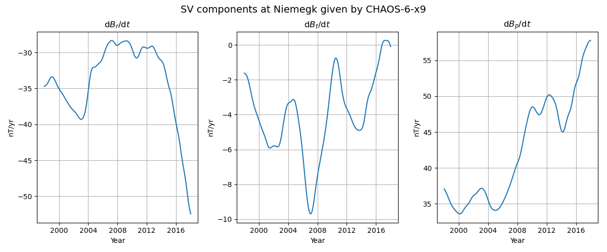

Note
Click here to download the full example code
Evaluate CHAOS at a Ground Observatory¶
Compute a time series of the first time-derivative of the field components (SV) given by CHAOS.
In this example the location of the ground observatory in Niemegk (Germany) is used. Also, the spherical harmonic coefficients of the SV are truncated at degree 16.
Out:
/home/ancklo/Documents/Python/ChaosMagPy/chaosmagpy/chaos.py:2471: UserWarning: Missing calibration parameters: 'pp_CAL'
warnings.warn(f'Missing calibration parameters: {err}')
import chaosmagpy as cp
import matplotlib.pyplot as plt
import numpy as np
model = cp.CHAOS.from_mat('CHAOS-6-x9.mat') # load the mat-file of CHAOS-6-x9
data = {
'Time': np.linspace(cp.data_utils.mjd2000(1998, 1, 1),
cp.data_utils.mjd2000(2018, 1, 1), 500),
'Radius': 6371.2, # mean radius of Earth's surface in km
'Theta': 37.93, # colatitude in degrees
'Phi': 12.68 # longitude in degrees
}
# compute SV components with CHAOS up to degree 16
dBr, dBt, dBp = model.synth_values_tdep(
data['Time'], data['Radius'], data['Theta'], data['Phi'], nmax=16, deriv=1)
fig, axes = plt.subplots(1, 3, figsize=(12, 5))
fig.subplots_adjust(
top=0.874,
bottom=0.117,
left=0.061,
right=0.985,
hspace=0.2,
wspace=0.242
)
fig.suptitle(f'SV components at Niemegk given by {model.name}', fontsize=14)
axes[0].plot(cp.data_utils.timestamp(data['Time']), dBr)
axes[1].plot(cp.data_utils.timestamp(data['Time']), dBt)
axes[2].plot(cp.data_utils.timestamp(data['Time']), dBp)
axes[0].set_title('d$B_r$/d$t$')
axes[1].set_title('d$B_t$/d$t$')
axes[2].set_title('d$B_p$/d$t$')
for ax in axes:
ax.grid()
ax.set_xlabel('Year')
ax.set_ylabel('nT/yr')
plt.show()
Total running time of the script: ( 0 minutes 0.173 seconds)